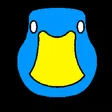
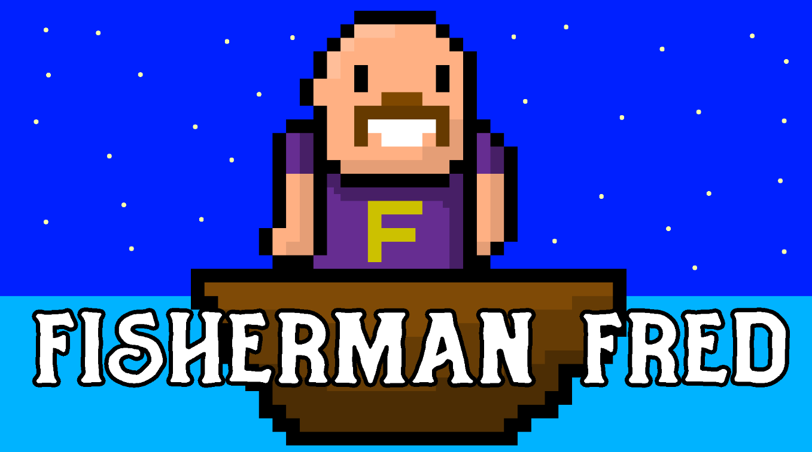
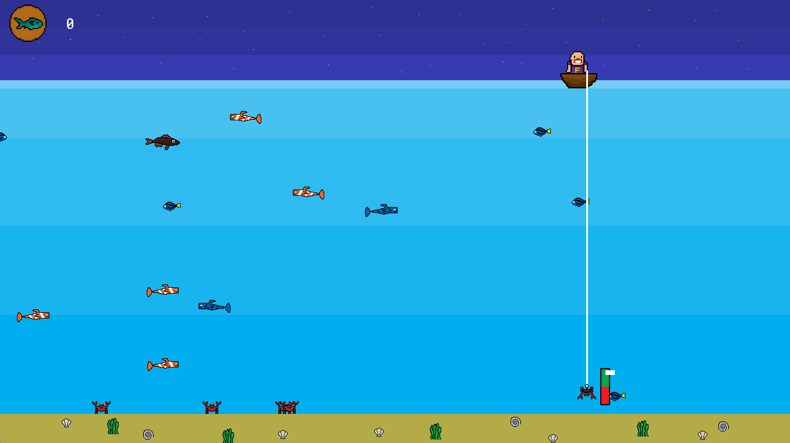
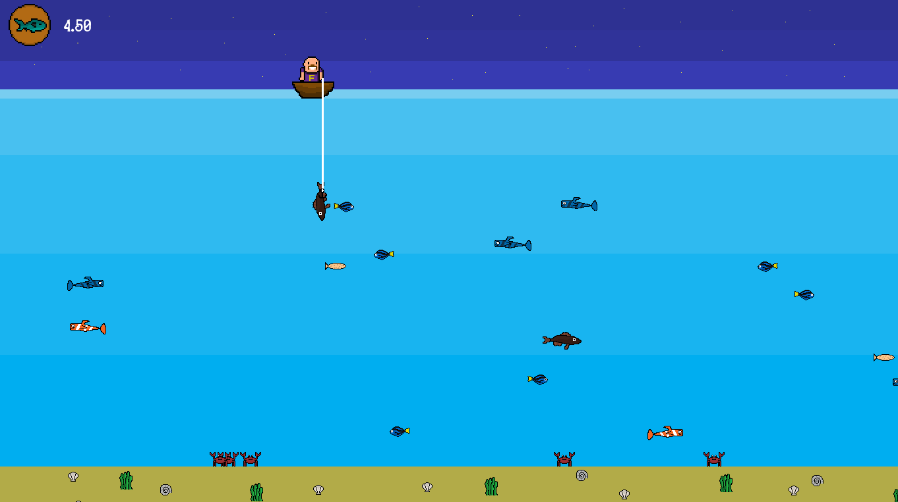

Gijs EldermanFisherman Fred
Project Type: Personal Project
Project Duration: -
Team size: 1

Project Information
Fisherman Fred is a 2D fishing game made inside GameMaker, this was the first time I ever used GameMaker. So I'm pretty proud of this project since it was my first one.
In this game you need to catch as many fish as possible, whenever you hook a fish a skillcheck appears. If you fail that skillcheck, the fish swims away.
Click on this link to open the itch.io page of the game:
https://meatchips.itch.io/fisherman-fred
My Contributions
Programming
- Created player movement
- Created a fishing system
- Added that a skillcheck appears when you catch a fish
- Added a points system, were every fish gives different points
- Created a system were the fishes keep swimming from left to right
- Created a main menu
Art
- Player sprite
- All fish sprites
- Environment sprites
- UI sprites

×